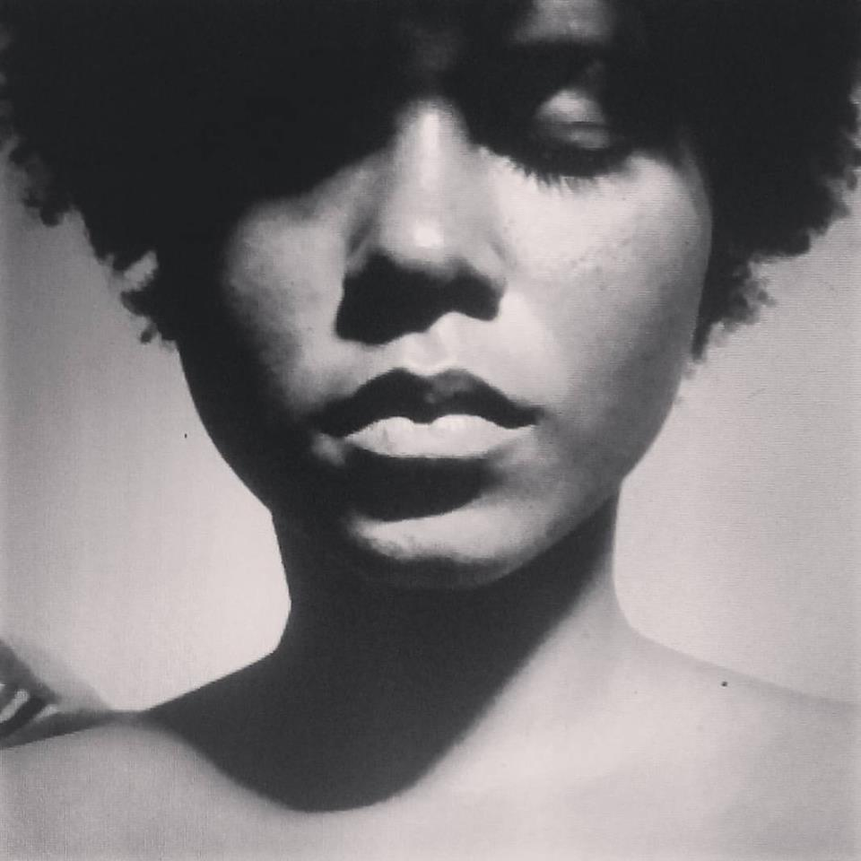
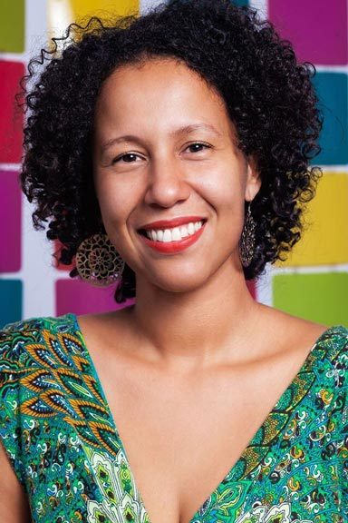

Funções / Oficinas e cursos livres
As informações de cada perfil são de responsabilidade das profissionais.
Você quer conhecer profissionais de quais estados?
Marcar/Desmarcar todos
CARREGANDO ...
 Beatriz Vieirah (BA)
Beatriz Vieirah (BA)
Beatriz Vieirah
24 anos | São Félix (BA)
b.vieirah1@gmail.com
Graduanda em Cinema e Audiovisual pela Universidade Federal do Recôncavo da Bahia, ativista negra feminista, fotógrafa, coordenadora e idealizadora do Projeto Seminário Cinema Negro Brasileiro. Tem experiência no cinema e vídeo filmmaker, assistente de direção, câmera, roteiro e preparação de atores, com destaque para as obras cinematográficas, Lápis de Cor, O Cadeado, Entre Passos, Sinfonia de Uma Pequena Cidade, Noite de Baile, telefilme O milagre dos pássaros, videoclipe Mau Achismo e O corpo é meu. Já ministou oficinas de Produção de Vídeo. Suas pesquisa gira em torno de Mulheres Negras no Cinema Brasileiro. E atualmente está produzindo Lélia Gonzalez - O Filme, enquanto diretora.
Outras atividades de Beatriz Vieirah
Direção |
Direção de fotografia |
Pesquisa e desenvolvimento |
Preparação de elenco |
Roteiro
Amostra de vídeo
 Carem Abreu (MG)
Carem Abreu (MG)
Carem Abreu
46 anos | Belo Horizonte (MG)
caremabreu@gmail.com
Cineasta, jornalista e capoeirista angoleira. Atuo desde 1996 nos setores Audiovisual e de Culturas Populares como Pesquisadora, Gestora Cultural, Diretora, Roteirista, Produtora Executiva, de Elenco e de Set. Idealizadora da Mostra CineAfroBH.
ATUAÇÃO PROFISSIONAL: ATOS CENTRAL DE IMAGENS. youtube.com/user/atosimagens
Desde 2007: Produtora Executiva, Diretora e Roteirista Atuais 2015: produção executiva do filme e seriado CIDADE DO SOL (Ação, 2015MG, Guto Aeraphe) webseriados.tv (vimeo.com/ondemand/webseriecidadedosol).
PRÊMIO: novembro 2015 Edital de Intercâmbio do MINC > Oficina de Produção Audiovisual em DAKAR, Senegal, na Associação Batuk de Comunicação e Cultura.
http://www.mostracineafrobh.com
Outras atividades de Carem Abreu
Direção |
Exibição |
Ensino superior |
Pesquisa e desenvolvimento |
Produção |
Roteiro
Amostra de vídeo
 Carol Rodrigues (SP)
Carol Rodrigues (SP)
Carol Rodrigues
32 anos | São Paulo (SP)
rsscarol@gmail.com
Sou formada em Ciências Sociais pela Unicamp e em Audiovisual pela ECA-Usp, onde me especializei em Produção, Direção e Montagem. Paralelamente a minha graduação, também me especializei como roteirista através de cursos livres na AIC e no B_Arco. Em 2014, fui contemplada pelo edital Curta-Afirmativo, para a realização do curta-metragem “A boneca e o silêncio”. O filme participou de diversos festivais nacionais e internacionais, sendo vencedor do prêmio de Melhor curta eleito pelo público do 6 FESTin em Lisboa, dos prêmios de Melhor Curta eleito pelo Júri e pelo Público do Entretodos 8, do Prêmio do Júri do Boat of Culture na Polônia e de Melhor direção do 2 Raipur Short Film Festival na Índia.
http://rsscarol.wixsite.com/portfolio
Outras atividades de Carol Rodrigues
Direção |
Edição |
Roteiro
Amostra de vídeo
 Erica Ribeiro (SP)
Erica Ribeiro (SP)
Erica Ribeiro
29 anos | São Paulo (SP)
eraribeiro@gmail.com
Artísta multifuncional.
http://eraribeiro.blogspot.com
Outras atividades de Erica Ribeiro
Atuação |
Cenografia |
Direção de Arte |
Dublagem |
Figurino |
Locução |
Maquiagem |
Preparação de Elenco
Amostra de vídeo
 Francine Barbosa (SP)
Francine Barbosa (SP)
Francine Barbosa
31 anos | São Paulo (SP)
francinibarbosa@gmail.com
Francine Barbosa é roteirista e educadora. Desenvolveu e ministrou oficinas de audiovisual nos programas Cine Escola Tela Brasil, Fábricas de Cultura, CulturAção e Programa VAI, nos quais orientou a produção de mais de 70 curtas metragens realizados por crianças, adolescentes e adultos. Foi coordenadora do curso Técnico em Direção Cinematográfica - Filmworks da Academia Internacional de Cinema entre 2014 e 2015. Atualmente desenvolve projetos de audiovisual voltados ao público adolescente e adulto, ministra aulas de roteiro e atua como parecerista em editais do FSA e outros órgãos.
https://www.linkedin.com/in/francinebarbosa
Outras atividades de Francine Barbosa
Ensino superior |
Roteiro
Amostra de vídeo
Helô França (BA)
Helô França
25 anos | Cachoeira (BA)
heloisa_1106@hotmail.com
Possui Bacharelado em Artes Visuais pela Universidade Federal do Recôncavo da Bahia (UFRB). Fotógrafa, performer, designer e trançadeira. Na fotografia, tem experiência na área do fotojornalismo, em direção de fotografia, no registro de eventos artísticos, shows, peças de teatro, aniversários, seminários, festivais, fóruns e congressos. Sua produção artística atual dialoga com o campo mítico religioso afro-baiano e tem como temática o corpo da mulher negra, enquanto corpo-templo, ancestralidade e fertilidade, envolvendo fotografia, vídeo arte, ilustrações e performance.
Outras atividades de Helô França
Direção de Fotografia |
Fotografia Still
Amostra de vídeo
Keila Borges (RJ)
Keila Borges
Rio de Janeiro (RJ)
borgeskeila.cine@gmail.com
Comecei no audiovisual em 2001 como assistente de produção mas, acabei focando mesmo em pós-produção, a partir de 2005. Passei por produtoras no Rio e SP, entre elas, a Pix Post, OpenFilms, Conspiração, HungryMan, Zola, Gullane, OceanFilms, DotCine e Casa Violeta. Desde 2015, faço consultorias para documentários e coordeno longas metragens, entre eles, Qualquer Gato Vira-Lata 2 e Até que a Sorte nos Separe 3. Coordeno projetos, equipes e organizo todo fluxo de mídia e trabalho de projetos simples aos mais complexos, em todos os gêneros e formatos. Também dou aulas de Pós na AIC-RJ e SP, Telezoom e organizo encontros mensais Jardim Digital: o Café com Pós. Fluente em inglês e espanhol.
http://resolvenapos.com
Outras atividades de Keila Borges
Coordenação de pós-produção
Amostra de vídeo
 Mariani Lima (SP)
Mariani Lima (SP)
Mariani Lima
25 anos | Campinas (SP)
mariani_lima@hotmail.com
Formada em Cinema e Audiovisual na UFPel, atualmente trabalho como cinegrafista e editora freelancer em Campinas. Também sou Audiodescritora certificada.
http://www.vimeo.com/mariani
Outras atividades de Mariani Lima
Assistência de Direção |
Atuação |
Direção |
Direção de Fotografia |
Edição |
Fotografia Still |
Roteiro
Amostra de vídeo
 Michelle Andrews (AM)
Michelle Andrews (AM)
Michelle Andrews
32 anos | Manaus (AM)
michelleandrewsdifusao@gmail.com
Michelle Andrews, manauara, é produtora cultural, videomaker, fundadora do Coletivo Difusão (AM), autodidata atua em projetos socioculturais e ambientais desde 2004. Ministrou oficina e workshops no campo da produção audiovisual. Elabora e executa projetos de diversas linguagens desenvolvidos em território brasileiro, em especial na região Amazônica. Atualmente é coordenadora da MIVA: Mostra Internacional de Videodança, Semana do Audiovisual em Manaus e Centro Popular do Audiovisual
https://www.facebook.com/michelleandrewsnorte
Outras atividades de Michelle Andrews
Captação de Recursos |
Cineclubismo |
Edição |
Roteiro
Amostra de vídeo
 Priscila Oliveira (SP)
Priscila Oliveira (SP)
Priscila Oliveira
28 anos | Valinhos (SP)
priscifch@gmail.com
Sou formada em Ciências Sociais e Midialogia, pesquiso direção de criança para cinema no curso Mestrado em Artes da Cena. Minha formação e experiências estão voltadas para roteiro e direção, mas gosto de ampliar meus conhecimentos teóricos e práticos em outras áreas do audiovisual. Também tenho interesse em trabalhos que envolvam o negro e a mulher no cinema (na frente e atrás da câmera), principalmente em relação à construção de personagens.
https://www.facebook.com/ameiavista
Outras atividades de Priscila Oliveira
Assistência de Direção |
Direção |
Ensino superior |
Figurino |
Fotografia Still |
Gerência de Mídia |
Pesquisa e desenvolvimento |
Preparação de Elenco |
Produção |
Programação e curadoria |
Roteiro
Amostra de vídeo
 Thais Scabio (SP)
Thais Scabio (SP)
Thais Scabio
39 anos | São Paulo (SP)
thaisscabio@gmail.com
Diretora, Produtora, educadora e cineclubista. Coordenadora dos projetos "JAMAC Cinema Digital" e " coletivo Mascate Cineclube", em São Paulo. Trabalha com cinema digital desde 2002. Graduada em Comunicação Social, Especialista em Direção de Cinema e Video pela ELCV de Santo André. Sócia-fundadora da produtora Cavalo Marinho Audiovisual, foi produtora executiva da animação "Graffiti Dança, ganhadora do prêmio de Melhor Curta Brasileiro do Anima Mundi 2013. Atualmente produz e dirige a websérie "Terror em um minuto" e esta em desenvolvimento de seu primeiro longa-metragem.